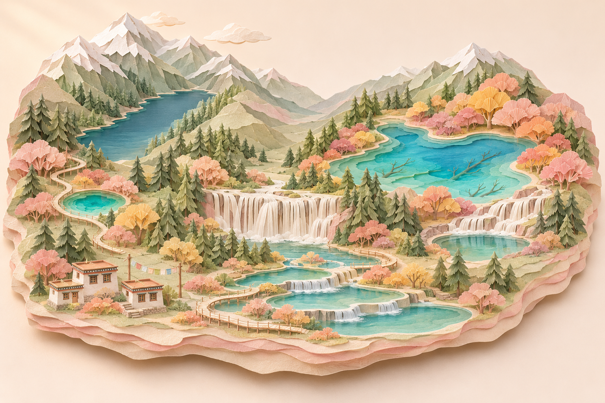

四川 · 九寨沟
九寨水行记
The shape of water.
九寨山水
JIUZHAI VALLEY风过林梢，水有回声。
把这一刻留在 树正群海
一句话，一张照片，留在山水之间。
山水正在苏醒
A landscape, slowly unfolding.四川 · 九寨沟
The shape of water.
风过林梢，水有回声。
一句话，一张照片，留在山水之间。
山水正在苏醒
A landscape, slowly unfolding.FROM A PAGE TO A LANDSCAPE
让水面映出光，
让风经过每一片树林。

长海的深蓝，五花海的青碧。珊瑚、杏桃与奶油金的秋林，围住一片清澈的水。
雪纸覆着山脊，湖岸叠出由浅入深的色阶。杉枝与扇叶一层层展开，水帘在岩台之间分流、落下。
湖面缓缓起伏，瀑布持续落下，秋林随风摇动。自由转动视角，触动水面，也可以在喜欢的风景旁留一页记忆。